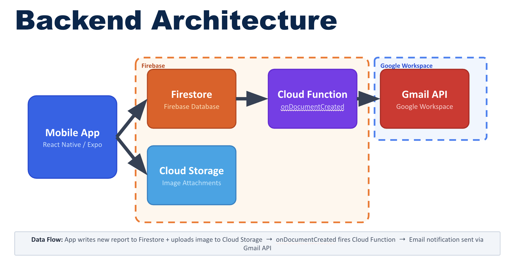

UX Process
Placeholder content: User research, journey mapping, wireframes, usability testing, and design iteration notes go here.
A mobile app that empowers the U-M community to report accessibility barriers easily.
Placeholder content: User research, journey mapping, wireframes, usability testing, and design iteration notes go here.
Placeholder content: Feedback loops, stakeholder check-ins, demo sessions, approvals, and revision tracking go here.
![Team sprint retrospective chart across four sprints with a blue “feelings” line that rises in Sprint 1, dips in Sprint 2, peaks in Sprint 3, then slightly declines and levels in Sprint 4. Below, a table lists Wins, Struggles, and Actions for each sprint: Wins include increased client communication, rapid progress, improved planning, shared vision, aligned design direction, stronger internal communication, efficient workflow, near-complete delivery, strong collaboration, and more realistic planning. Struggles include unclear client requirements, unfamiliar Jira workflow, external blockers (Firebase/ITS approval), internal misalignment on app direction, carryover work, underestimated task complexity, and dependency-driven delays. Actions include increasing client communication, improving Jira usage and clarifying dependencies, aligning on design before development, breaking down tasks, improving task ownership/execution clarity, and adjusting expectations to prioritize critical work.](images/Agile_Journey.png)
Placeholder content: Sprint cadence, backlog grooming, standups, retrospectives, and milestone outcomes go here.
Placeholder content: Architecture decisions, implementation phases, QA/testing workflow, and deployment approach go here.
Our technology stack consists of React Native, Firebase, and Expo Go, which allowed us to build a cross-platform (IOS and Android) mobile application.
